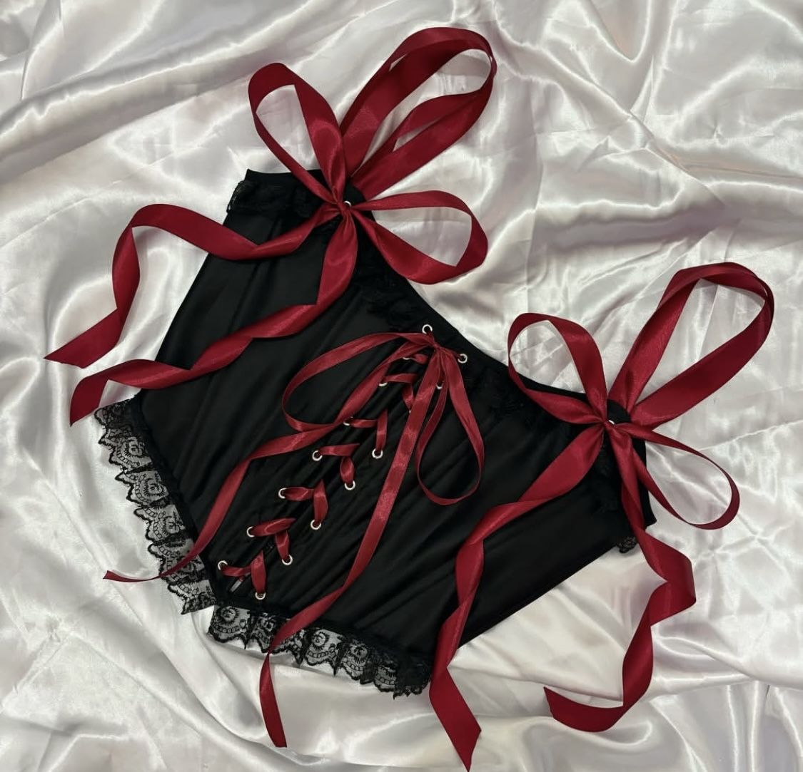
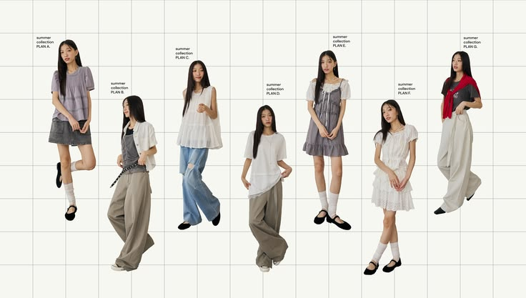
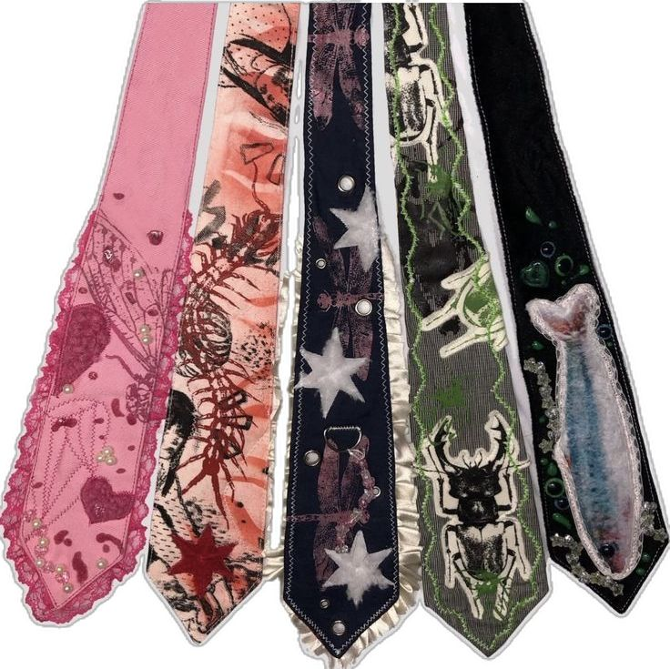
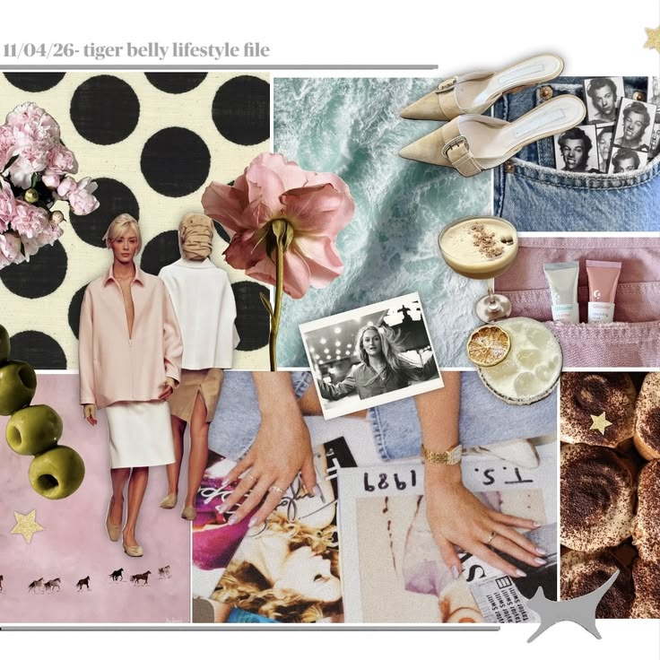
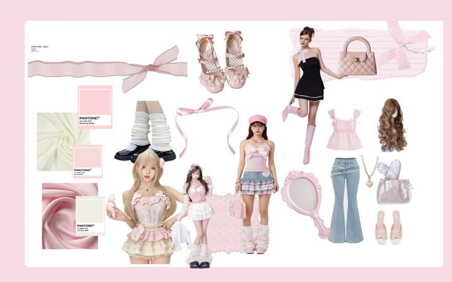
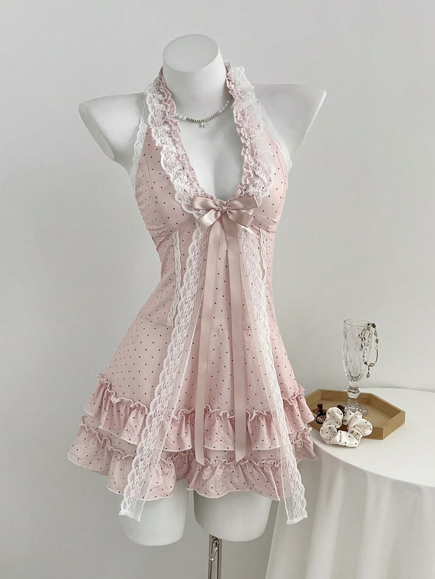
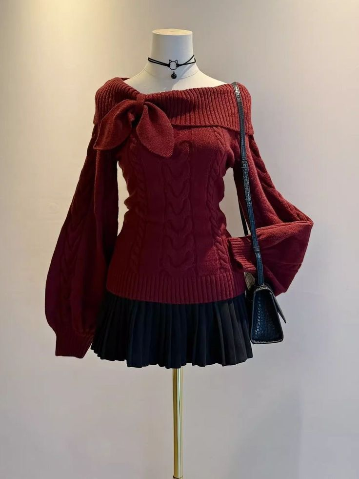
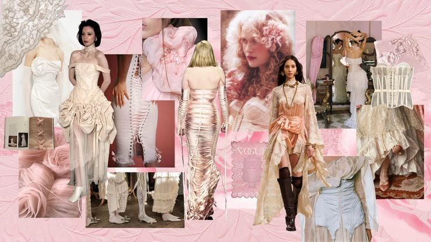

Blusas
Pequeños detalles que hacen la diferencia.
Ver prendas →Un pequeño jardín lleno de prendas, colores y detalles especiales. Explora nuestra colección y encuentra esas piezas que se sienten muy tú.
Descubre el catálogo → Made with love ♡



EXPLORA NUESTRO JARDÍN
Desde prendas para todos los días hasta piezas especiales para esos momentos que quieres recordar.

Pequeños detalles que hacen la diferencia.
Ver prendas →
Para florecer en cada ocasión.
Ver prendas →
Tu nueva prenda favorita para días frescos.
Ver prendas →UN POQUITO SOBRE NOSOTROS
Yess Sweet Garden es un espacio para descubrir prendas que conecten con tu personalidad. Queremos que explorar la moda sea una experiencia bonita, sencilla y llena de inspiración.
Explora las prendas →
Let yourself bloom ♡